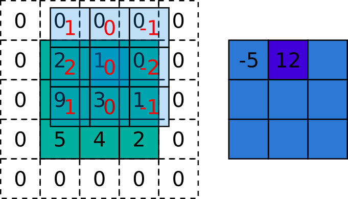
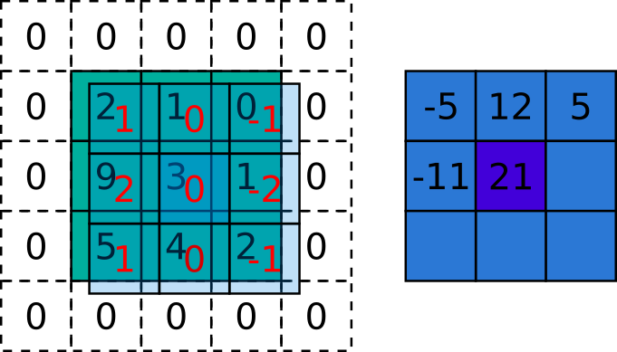
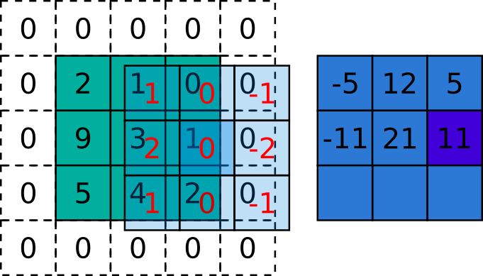
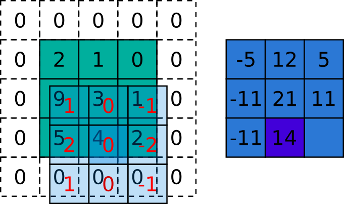
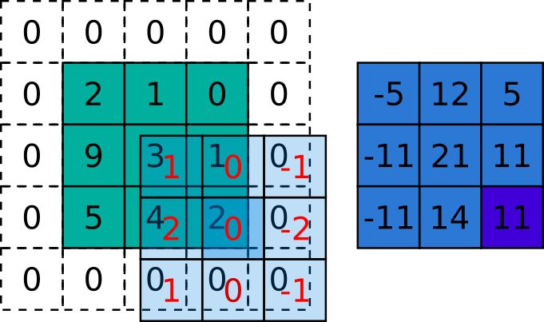
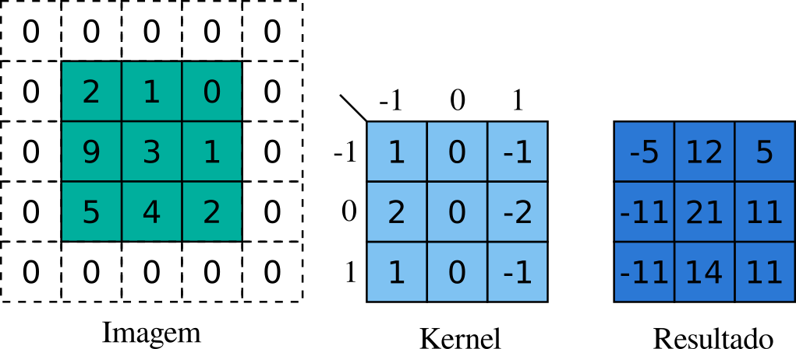

5.1 Convolução
Convolução é uma operação muito utilizada no PDI, a qual tem suas origens na matemática, onde ela é definida como uma operação realizada entre duas funções e que resulta numa terceira, ou, em outras palavras, ela recebe dois sinais de entrada e gera um sinal de saída. No caso do PDI, podemos imaginar os sinais de entrada como sendo a nossa imagem e o filtro (kernel), e a nossa saída como sendo a imagem filtrada.
Quando dizemos kernel, estamos nos referindo a uma função ou, no caso do processamento de imagens, a uma matriz, que é aplicada em nossa imagem e produz como saída o objeto de entrada com modificações. Na tabela 5.1, temos exemplos de alguns tipos de kernels que podem ser utilizados na convolução e seus respectivos resultados. Além dos efeitos mais comuns, como o de desfoque (blur), podemos utilizar kernels que extraem informações mais complexas das imagens, como os detectores de borda, que serão discutidos mais a fundo nos próximos tópicos.
| Operação | Kernel | Resultado |
|---|---|---|
| Identidade (Imagem Original) | \[\begin{bmatrix} 0 & 0 & 0\\ 0 & 1 & 0\\ 0 & 0 & 0 \end{bmatrix}\] |  |
| Detecção de borda | \[\begin{bmatrix} -1 & -1 & -1\\ -1 & 8 & -1\\ -1 & -1 & -1 \end{bmatrix}\] |  |
| Média (box blur) | \[\frac{1}{9}\begin{bmatrix} 1 & 1 & 1\\ 1 & 1 & 1\\ 1 & 1 & 1 \end{bmatrix}\] |  |
| Gaussian blur | \[\frac{1}{16}\begin{bmatrix} 1 & 2 & 1\\ 2 & 4 & 2\\ 1 & 2 & 1 \end{bmatrix}\] | |
Agora, veremos operação de convolução mais detalhadamente. Essa operação geralmente é representada por \(*\) e pode ser descrita, em poucas palavras, como uma soma de produtos que é realizada com um deslizamento sobre a função de entrada. A figura 5.2 representa de maneira visual a convolução em um cenário de uma dimensão, através do sinal de entrada (signal) e o kernel. Podemos ainda perceber que o kernel está rotacionado em 180º, isso se deve a definição de convolução.
Figura 5.2: Convolução em uma dimensão [15]
Algo interessante que podemos observar na imagem 5.2 é que nosso sinal de entrada é quase totalmente 0 e contém um único ponto 1, isso faz com que nosso resultado seja uma cópia do kernel. A partir disso, conseguimos imaginar o por que temos como resultado a própria imagem quando aplicado um kernel identidade, como mostrado na tabela 5.1.
Antes de irmos mais adiante no assunto, é importante esclarecermos alguns conceitos para que não se tornem confusos. Existe outra operação matemática extremamente parecida com a convolução chamada correlação, sendo que ela também realiza a soma de multiplicações com a diferença de que ela não rotaciona o kernel.
Para entendermos bem essa diferença, podemos observar a figura 5.3, onde temos um exemplo de correlação e convolução sendo executados em um espaço unidimensional. Temos uma função \(f\) e um filtro \(w\) na figura 5.3 (a) e (b), na sequência, de (b) e (j), temos as funções e os filtros prontos para se realizar a correlação e a convolução. Nas etapas (c) e (k), podemos ver o preenchimento com zeros, isso ocorre porque há partes das funções que não se sobrepõem, dessa forma, permite que \(w\) percorra todos os pixels de \(f\). Após isso, é realizado o primeiro passo da correlação e convolução, onde podemos observar que o resultado é 0 já que \(w\) está sobreposto por somente zeros, logo a soma da multiplicação de cada item de \(w\) por \(f\) será nulo. Deslocamos então o filtro \(w\) em uma unidade a direita, onde o resultado novamente será 0, sendo que o primeiro resultado não nulo se dará no terceiro deslocamento, sendo 8 para a correlação e \(1\) para a convolução. Temos o resultado de ambas operações em (g) e (o) e o resultado recortado em (h) e (p), recorte este que remove os zeros até o tamanho ficar igual ao da \(f\) inicial.
Figura 5.3: Ilustração de correlação e convolução unidimensional [2, p. 96]
Vamos extender agora essas duas operações à aplicação em duas dimensões. Uma representação disso pode ser vista na figura 5.4, onde temos novamente o kernel \(w\) e a função \(f\). Percebe-se outra vez o efeito de se aplicar o kernel em uma imagem com apenas o número 1 no meio, nos dois casos temos como saída a cópia do kernel, com a diferença que na correlação ele sai rotacionado. Assim, nota-se que se pré-rotacionarmos o filtro e realizarmos a correlação teremos no final uma convolução.
Já que a correlação e convolução são iguais, quais delas devo utilizar? Segundo Gonzalez, [2, p. 98], isso é uma questão de preferência e qualquer uma das duas operações conseguem realizar a outra com uma simples rotação do kernel. Essa questão se torna ainda menos relevante quando utilizamos filtros que são simétricos, pois, como antes e após a rotação temos o mesmo kernel, tanto correlação ou convolução nos darão o mesmo resultado; já em kernels assimétricos, temos resultados diferentes. Ainda, segundo Moeslund, [7, p. 87], quando trabalhamos com filtros de desfoque, detectores de borda, entre outros, o processo de se aplicar o kernel é comumente chamado de convolução mesmo quando na prática se é implementada a correlação.
![Ilustração de correlação e convolução bidimensional [2, p. 98]](imagens/05-filtros/correlationNConvolution2D.png)
Figura 5.4: Ilustração de correlação e convolução bidimensional [2, p. 98]
5.1.1 Definção matemática de convolução
Vamos explorar um pouco das notações matemáticas utilizadas para representar a convolução e a correlação, assim também poderemos consolidar a idéia de que ambas são muito correlacionadas. Como dito no início desta seção, geralmente a convolução é identificada por \(*\), já a correlação costuma ser identificada por ☆. A correlação em duas dimensões segue a seguinte equação (Equação X):
\(g(x,y) = w(x,y)☆f(x,y) = \sum_{s=-a}^{a}\sum_{t=-b}^{b}\ w(s,t)f(x+s,y+t)\)
Onde \(w\) é nosso \(kernel\) e \(f\) nossa imagem, podemos perceber que ambas são funções de duas variáveis, \(x\) e \(y\), pois estamos trabalhando em duas dimensões. Os limites dos somatórios são dados por \(a=(m-1)/2\) e \(b=(n-1)/2\). E o que essa função faz é andar em cada posição da imagem, ou seja, \((x,y)\), e substituir o píxel atual pela soma de produtos da multiplicação dos valores do \(kernel\) pelos valores dos píxels da imagem. Já a convolução tem uma equação bem similar, sendo diferente apenas pelos sinais negativos em \(f\), o que evidência a rotação do \(kernel\). Podemos notar que os sinais inversos estão em \(f\) e não em \(w\); segundo [2, p. 98], isso é usado para fins de simplicidade de notação e não alteram o resultado.
\(g(x,y) = w(x,y)*f(x,y) = \sum_{s=-a}^{a}\sum_{t=-b}^{b}\ w(s,t)f(x-s,y-t)\)
Uma das melhores maneiras de entender bem as equações é ver um exemplo prático. Veremos isso a seguir, onde temos um exemplo passo-a-passo de correlação:
 \[
\text{w}\text{*f}\left(0,0\right)\text{=}\sum_{s}^{}\sum_{t}^{}\text{w}\left(s,t\right)\text{f}\left(0+s,0+t\right)\,\text{=}\,\\
\text{+w}\left(-1,-1\right)\text{f}\left(-1,-1\right)\text{+w}\left(-1,0\right)\text{f}\left(-1,0\right)\text{+w}\left(-1,1\right)\text{f}\left(-1,1\right)\\
\text{+w}\left(0,-1\right)\text{f}\left(0,-1\right)\text{+w}\left(0,0\right)\text{f}\left(0,0\right)\text{+w}\left(0,1\right)\text{f}\left(0,1\right)\\
\text{+w}\left(1,-1\right)\text{f}\left(1,-1\right)\text{+w}\left(0,1\right)\text{f}\left(0,-1\right)\text{+w}\left(1,1\right)\text{f}\left(-1,-1\right)\\
=\,1\cdot0+0\cdot0+\left(-1\right)\cdot0\\
+2\cdot0+0\cdot2+\left(-2\right)\cdot1\\
+1\cdot0+0\cdot9+\left(-1\right)\cdot3\\
=0\,-2-3\,=\,-5
\]
\[
\text{w}\text{*f}\left(0,0\right)\text{=}\sum_{s}^{}\sum_{t}^{}\text{w}\left(s,t\right)\text{f}\left(0+s,0+t\right)\,\text{=}\,\\
\text{+w}\left(-1,-1\right)\text{f}\left(-1,-1\right)\text{+w}\left(-1,0\right)\text{f}\left(-1,0\right)\text{+w}\left(-1,1\right)\text{f}\left(-1,1\right)\\
\text{+w}\left(0,-1\right)\text{f}\left(0,-1\right)\text{+w}\left(0,0\right)\text{f}\left(0,0\right)\text{+w}\left(0,1\right)\text{f}\left(0,1\right)\\
\text{+w}\left(1,-1\right)\text{f}\left(1,-1\right)\text{+w}\left(0,1\right)\text{f}\left(0,-1\right)\text{+w}\left(1,1\right)\text{f}\left(-1,-1\right)\\
=\,1\cdot0+0\cdot0+\left(-1\right)\cdot0\\
+2\cdot0+0\cdot2+\left(-2\right)\cdot1\\
+1\cdot0+0\cdot9+\left(-1\right)\cdot3\\
=0\,-2-3\,=\,-5
\]
 \[ \text{w}\text{*f}\left(0,1\right)\text{=}\sum_{s}^{}\sum_{t}^{}\text{w}\left(s,t\right)\text{f}\left(0+s,1+t\right)\,\text{=}\,\\ \text{+w}\left(-1,-1\right)\text{f}\left(-1,0\right)\text{+w}\left(-1,0\right)\text{f}\left(-1,1\right)\text{+w}\left(-1,1\right)\text{f}\left(-1,2\right)\\ \text{+w}\left(0,-1\right)\text{f}\left(0,0\right)\text{+w}\left(0,0\right)\text{f}\left(0,1\right)\text{+w}\left(0,1\right)\text{f}\left(0,2\right)\\ \text{+w}\left(1,-1\right)\text{f}\left(1,0\right)\text{+w}\left(1,0\right)\text{f}\left(1,1\right)\text{+w}\left(1,1\right)\text{f}\left(1,2\right)\\ =\,1\cdot0+0\cdot0+\left(-1\right)\cdot0\\ +2\cdot2+0\cdot1+\left(-2\right)\cdot0\\ +1\cdot9+0\cdot3+\left(-1\right)\cdot1\\ =0\,+4+8=\,12 \]
 \[
\text{w}\text{*f}\left(0,2\right)\text{=}\sum_{s}^{}\sum_{t}^{}\text{w}\left(s,t\right)\text{f}\left(0+s,2+t\right)\,\text{=}\,\\
\text{+w}\left(-1,-1\right)\text{f}\left(-1,1\right)\text{+w}\left(-1,0\right)\text{f}\left(-1,2\right)\text{+w}\left(-1,1\right)\text{f}\left(-1,3\right)\\
\text{+w}\left(0,-1\right)\text{f}\left(0,1\right)\text{+w}\left(0,0\right)\text{f}\left(0,2\right)\text{+w}\left(0,1\right)\text{f}\left(0,3\right)\\
\text{+w}\left(1,-1\right)\text{f}\left(1,1\right)\text{+w}\left(1,0\right)\text{f}\left(1,2\right)\text{+w}\left(1,1\right)\text{f}\left(1,3\right)\\
=\,1\cdot0+0\cdot0+\left(-1\right)\cdot0\\
+2\cdot1+0\cdot0+\left(-2\right)\cdot0\\
+1\cdot3+0\cdot1+\left(-1\right)\cdot0\\
=0\,+2+3=\,5
\]
\[
\text{w}\text{*f}\left(0,2\right)\text{=}\sum_{s}^{}\sum_{t}^{}\text{w}\left(s,t\right)\text{f}\left(0+s,2+t\right)\,\text{=}\,\\
\text{+w}\left(-1,-1\right)\text{f}\left(-1,1\right)\text{+w}\left(-1,0\right)\text{f}\left(-1,2\right)\text{+w}\left(-1,1\right)\text{f}\left(-1,3\right)\\
\text{+w}\left(0,-1\right)\text{f}\left(0,1\right)\text{+w}\left(0,0\right)\text{f}\left(0,2\right)\text{+w}\left(0,1\right)\text{f}\left(0,3\right)\\
\text{+w}\left(1,-1\right)\text{f}\left(1,1\right)\text{+w}\left(1,0\right)\text{f}\left(1,2\right)\text{+w}\left(1,1\right)\text{f}\left(1,3\right)\\
=\,1\cdot0+0\cdot0+\left(-1\right)\cdot0\\
+2\cdot1+0\cdot0+\left(-2\right)\cdot0\\
+1\cdot3+0\cdot1+\left(-1\right)\cdot0\\
=0\,+2+3=\,5
\]
 \[
\text{w}\text{*f}\left(1,0\right)\text{=}\sum_{s}^{}\sum_{t}^{}\text{w}\left(s,t\right)\text{f}\left(1+s,0+t\right)\,\text{=}\,\\
\text{+w}\left(-1,-1\right)\text{f}\left(0,-1\right)\text{+w}\left(-1,0\right)\text{f}\left(0,0\right)\text{+w}\left(-1,1\right)\text{f}\left(0,1\right)\\
\text{+w}\left(0,-1\right)\text{f}\left(1,-1\right)\text{+w}\left(0,0\right)\text{f}\left(1,0\right)\text{+w}\left(0,1\right)\text{f}\left(1,1\right)\\
\text{+w}\left(1,-1\right)\text{f}\left(2,-1\right)\text{+w}\left(1,0\right)\text{f}\left(2,0\right)\text{+w}\left(1,1\right)\text{f}\left(2,1\right)\\
=\,1\cdot0+0\cdot2+\left(-1\right)\cdot1\\
+2\cdot0+0\cdot9+\left(-2\right)\cdot3\\
+1\cdot0+0\cdot5+\left(-1\right)\cdot4\\
=\left(-1\right)\,+\left(-6\right)+\left(-4\right)=\,-11
\]
\[
\text{w}\text{*f}\left(1,0\right)\text{=}\sum_{s}^{}\sum_{t}^{}\text{w}\left(s,t\right)\text{f}\left(1+s,0+t\right)\,\text{=}\,\\
\text{+w}\left(-1,-1\right)\text{f}\left(0,-1\right)\text{+w}\left(-1,0\right)\text{f}\left(0,0\right)\text{+w}\left(-1,1\right)\text{f}\left(0,1\right)\\
\text{+w}\left(0,-1\right)\text{f}\left(1,-1\right)\text{+w}\left(0,0\right)\text{f}\left(1,0\right)\text{+w}\left(0,1\right)\text{f}\left(1,1\right)\\
\text{+w}\left(1,-1\right)\text{f}\left(2,-1\right)\text{+w}\left(1,0\right)\text{f}\left(2,0\right)\text{+w}\left(1,1\right)\text{f}\left(2,1\right)\\
=\,1\cdot0+0\cdot2+\left(-1\right)\cdot1\\
+2\cdot0+0\cdot9+\left(-2\right)\cdot3\\
+1\cdot0+0\cdot5+\left(-1\right)\cdot4\\
=\left(-1\right)\,+\left(-6\right)+\left(-4\right)=\,-11
\]
 \[ \text{w}\text{*f}\left(1,1\right)\text{=}\sum_{s}^{}\sum_{t}^{}\text{w}\left(s,t\right)\text{f}\left(1+s,1+t\right)\,\text{=}\,\\ \text{+w}\left(-1,-1\right)\text{f}\left(0,0\right)\text{+w}\left(-1,0\right)\text{f}\left(0,1\right)\text{+w}\left(-1,1\right)\text{f}\left(0,2\right)\\ \text{+w}\left(0,-1\right)\text{f}\left(1,0\right)\text{+w}\left(0,0\right)\text{f}\left(1,1\right)\text{+w}\left(0,1\right)\text{f}\left(1,2\right)\\ \text{+w}\left(1,-1\right)\text{f}\left(2,0\right)\text{+w}\left(1,0\right)\text{f}\left(2,1\right)\text{+w}\left(1,1\right)\text{f}\left(2,2\right)\\ =\,1\cdot2+0\cdot1+\left(-1\right)\cdot0\\ +2\cdot9+0\cdot3+\left(-2\right)\cdot1\\ +1\cdot5+0\cdot4+\left(-1\right)\cdot2\\ =2\,+16+3=\,21 \]
 \[ \text{w}\text{*f}\left(1,2\right)\text{=}\sum_{s}^{}\sum_{t}^{}\text{w}\left(s,t\right)\text{f}\left(1+s,2+t\right)\,\text{=}\,\\ \text{+w}\left(-1,-1\right)\text{f}\left(0,1\right)\text{+w}\left(-1,0\right)\text{f}\left(0,2\right)\text{+w}\left(-1,1\right)\text{f}\left(0,3\right)\\ \text{+w}\left(0,-1\right)\text{f}\left(1,1\right)\text{+w}\left(0,0\right)\text{f}\left(1,2\right)\text{+w}\left(0,1\right)\text{f}\left(1,3\right)\\ \text{+w}\left(1,-1\right)\text{f}\left(2,1\right)\text{+w}\left(1,0\right)\text{f}\left(2,2\right)\text{+w}\left(1,1\right)\text{f}\left(2,3\right)\\ =\,1\cdot1+0\cdot1+\left(-1\right)\cdot0\\ +2\cdot3+0\cdot1+\left(-2\right)\cdot0\\ +1\cdot4+0\cdot2+\left(-1\right)\cdot0\\ =1\,+6+4=\,11 \]
 \[
\text{w}\text{*f}\left(2,0\right)\text{=}\sum_{s}^{}\sum_{t}^{}\text{w}\left(s,t\right)\text{f}\left(2+s,0+t\right)\text{=}\\
\text{+w}\left(-1,-1\right)\text{f}\left(1,-1\right)\text{+w}\left(-1,0\right)\text{f}\left(1,0\right)\text{+w}\left(-1,1\right)\text{f}\left(1,1\right)\\
\text{+w}\left(0,-1\right)\text{f}\left(2,-1\right)\text{+w}\left(0,0\right)\text{f}\left(2,0\right)\text{+w}\left(0,1\right)\text{f}\left(2,1\right)\\
\text{+w}\left(1,-1\right)\text{f}\left(3,-1\right)\text{+w}\left(1,0\right)\text{f}\left(3,0\right)\text{+w}\left(1,1\right)\text{f}\left(3,1\right)\\
=\,1\cdot0+0\cdot9+\left(-1\right)\cdot3\\
+2\cdot0+0\cdot5+\left(-2\right)\cdot4\\
+1\cdot0+0\cdot0+\left(-1\right)\cdot0\\
=\left(-3\right)+\left(-8\right)+0=\,-11
\]
\[
\text{w}\text{*f}\left(2,0\right)\text{=}\sum_{s}^{}\sum_{t}^{}\text{w}\left(s,t\right)\text{f}\left(2+s,0+t\right)\text{=}\\
\text{+w}\left(-1,-1\right)\text{f}\left(1,-1\right)\text{+w}\left(-1,0\right)\text{f}\left(1,0\right)\text{+w}\left(-1,1\right)\text{f}\left(1,1\right)\\
\text{+w}\left(0,-1\right)\text{f}\left(2,-1\right)\text{+w}\left(0,0\right)\text{f}\left(2,0\right)\text{+w}\left(0,1\right)\text{f}\left(2,1\right)\\
\text{+w}\left(1,-1\right)\text{f}\left(3,-1\right)\text{+w}\left(1,0\right)\text{f}\left(3,0\right)\text{+w}\left(1,1\right)\text{f}\left(3,1\right)\\
=\,1\cdot0+0\cdot9+\left(-1\right)\cdot3\\
+2\cdot0+0\cdot5+\left(-2\right)\cdot4\\
+1\cdot0+0\cdot0+\left(-1\right)\cdot0\\
=\left(-3\right)+\left(-8\right)+0=\,-11
\]
 \[ \text{w}\text{*f}\left(2,1\right)\text{=}\sum_{s}^{}\sum_{t}^{}\text{w}\left(s,t\right)\text{f}\left(2+s,1+t\right)\,\text{=}\,\\ \text{+w}\left(-1,-1\right)\text{f}\left(1,0\right)\text{+w}\left(-1,0\right)\text{f}\left(1,1\right)\text{+w}\left(-1,1\right)\text{f}\left(1,2\right)\\ \text{+w}\left(0,-1\right)\text{f}\left(2,0\right)\text{+w}\left(0,0\right)\text{f}\left(2,1\right)\text{+w}\left(0,1\right)\text{f}\left(2,2\right)\\ \text{+w}\left(1,-1\right)\text{f}\left(3,0\right)\text{+w}\left(1,0\right)\text{f}\left(3,1\right)\text{+w}\left(1,1\right)\text{f}\left(3,2\right)\\ =\,1\cdot9+0\cdot3+\left(-1\right)\cdot1\\ +2\cdot5+0\cdot4+\left(-2\right)\cdot2\\ +1\cdot0+0\cdot0+\left(-1\right)\cdot0\\ =8+6+0=\,14\\ \]
 \[ \text{w}\text{f}\left(2,2\right)\text{=}\sum{s}^{}\sum{t}^{}\text{w}\left(s,t\right)\text{f}\left(2+s,2+t\right)\text{=}\\ \text{+w}\left(-1,-1\right)\text{f}\left(1,1\right)\text{+w}\left(-1,0\right)\text{f}\left(1,2\right)\text{+w}\left(-1,1\right)\text{f}\left(1,3\right)\\ \text{+w}\left(0,-1\right)\text{f}\left(2,1\right)\text{+w}\left(0,0\right)\text{f}\left(2,2\right)\text{+w}\left(0,1\right)\text{f}\left(2,3\right)\\ \text{+w}\left(1,-1\right)\text{f}\left(3,1\right)\text{+w}\left(1,0\right)\text{f}\left(3,2\right)\text{+w}\left(1,1\right)\text{f}\left(3,3\right)\\ =,1\cdot3+0\cdot1+\left(-1\right)\cdot0\\ +2\cdot4+0\cdot2+\left(-2\right)\cdot0\\ +1\cdot0+0\cdot0+\left(-1\right)\cdot0\\ =3+8+0=11 \]
 Fonte: Autoria própria inspirado em http://www.songho.ca/dsp/convolution/convolution2d_example.html e https://arxiv.org/abs/1603.07285
O exemplo utiliza um \(kernel\) assimétrico, então, como dito anteriormente, os resultados da correlação e convolução são diferentes. Deixaremos isso como um exercício ao leitor, realizar a convolução para provar a diferença. O caso anterior tem também uma característica que é o complemento das bordas com 0’s para que o \(kernel\) pudesse ser aplicado sobre toda a imagem. Essa é uma das maneiras de lidar com o problema das bordas, sendo que temos essa e mais algumas possibilidades [8, p. 125] [16, p. 60]:
Preenchimento com constante (constant padding): Método onde as laterais são preenchidas com um valor constante, comumente 0.
Preenchimento com vizinho (nearest neighbor): Se realiza o preenchimento das bordas adicionais com os valores dos vizinhos mais próximos.
Reflexão (reflect): Os pixels das bordas da imagem são repetidos nas bordas adicionais.
Repetição (ou wrap): A imagem é repetida nas bordas.
Além dos métodos apresentados existem outras técnicas que podem ser utilizadas, sendo que em cada caso se escolhe a que melhor se ajusta à tarefa realizada. O último ponto a ser explorado é a escolha do tamanho ideal do preenchimento que deve ser aplicado à imagem. De forma geral, se temos uma imagem (\(f\)), um kernel (\(w\)) e um preenchimento (\(p\)), podemos escrever a seguinte relação1:
\[saída = (f_{vertical} - w_{vertical} + p_{vertical} + 1) \times (f_{horizontal} - w_{horizontal} + p_{horizontal} + 1)\] Isso nos leva a perceber que o tamanho da imagem de saída aumenta conforme o preenchimento. Na maioria dos casos, queremos que a imagem de entrada e saída tenha o mesmo tamanho, então usamos \(p_{vertical} = k_{vertical} - 1\) e \(p_{horizontal} = k_{horizontal} - 1\). E como, geralmente, o kernel tem tamanho ímpar, utilizamos \(\frac{p_{vertical}}{2}\) e \(\frac{p_{horizontal}}{2}\).
Refêrencias
[2] R. C. Gonzalez e R. C. Woods, Processamento digital de imagens, 3º ed. São Paulo: Pearson Prentice Hall, 2010.
[7] T. B. Moeslund, Introduction to video and image processing: Building real systems and applications. Springer Science & Business Media, 2012.
[8] W. Burger, M. J. Burge, M. J. Burge, e M. J. Burge, Principles of digital image processing, vol. 111. Springer, 2009.
[14] W. Commons, “Kernel (image processing)”. 2020, [Online]. Disponível em: https://en.wikipedia.org/wiki/Kernel_(image_processing).
[15] T. e2eML Course Catalog, “Convolution in one dimension for neural networks”. 2020, [Online]. Disponível em: https://e2eml.school/convolution_one_d.html.
[16] R. CHITYALA e S. PUDIPEDDI, Image processing and acquisition using Python. CRC Press, 2020.